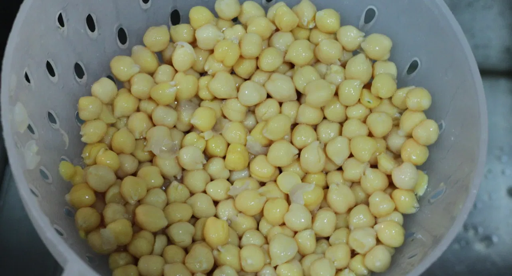
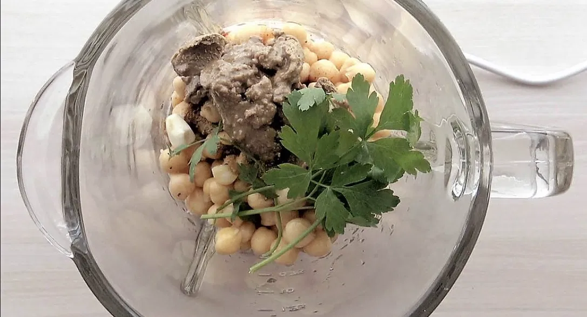
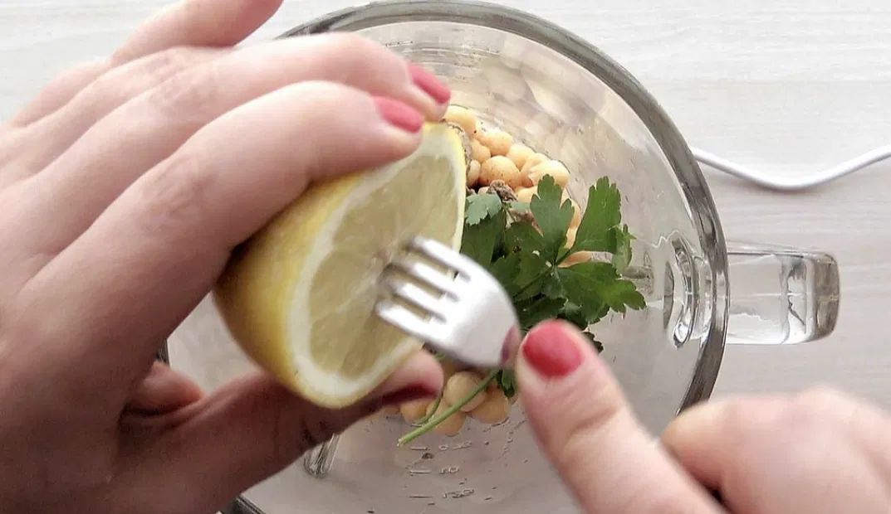
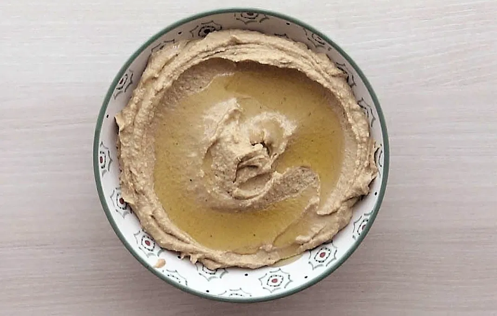
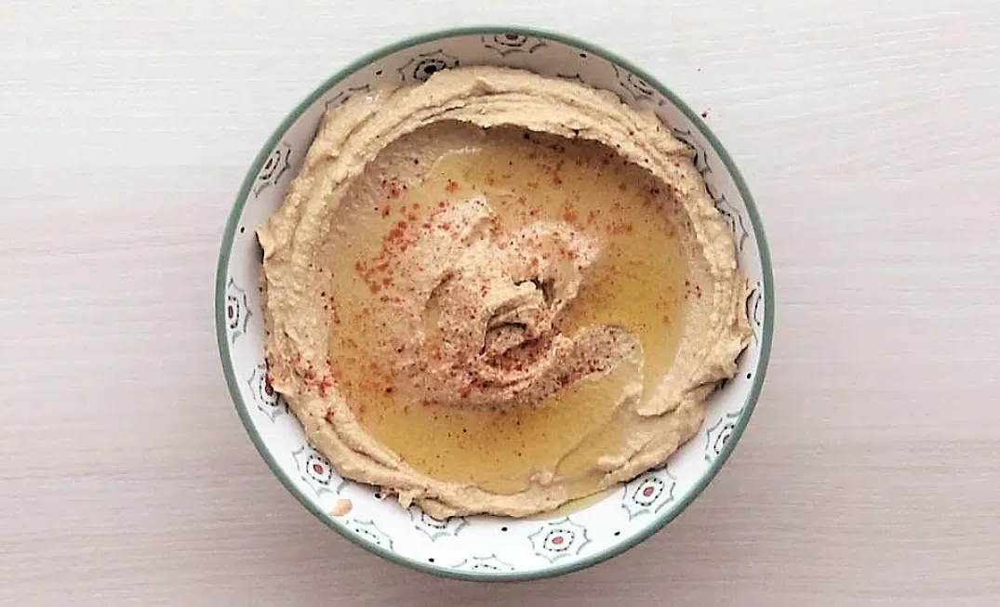
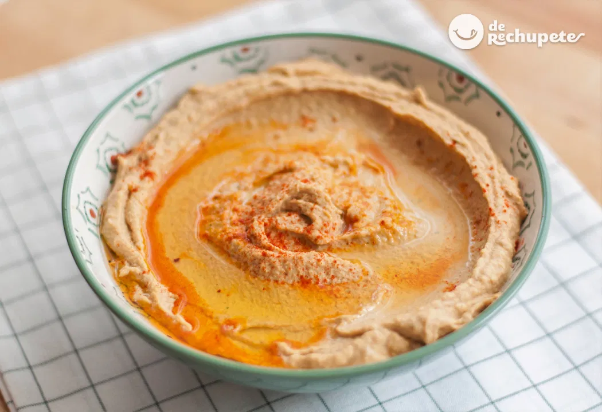

Tornar a la pàgina principal
Primer Plat: Hummus
- 400g de garbanzos cocidos
- 2 cucharadas de tahini (pasta de sésamo)
- 1 diente de ajo
- 3 cucharadas de aceite de oliva
- 1 cucharadita de comino en polvo
- El zumo de medio limón
- Sal al gusto
- Pimentón (para decorar)
- Colocar 400g de garbanzos cocidos en una batidora o procesador de alimentos.

- Añadir 2 cucharadas de tahini y 1 diente de ajo pelado.

- Exprimir el zumo de medio limón y agregarlo a la mezcla.

- Incorporar 3 cucharadas de aceite de oliva y 1 cucharadita de comino.

- Agregar sal al gusto y mezclar hasta obtener una textura suave.

- Servir en un plato, espolvorear con pimentón y añadir un poco más de aceite de oliva si se desea.
